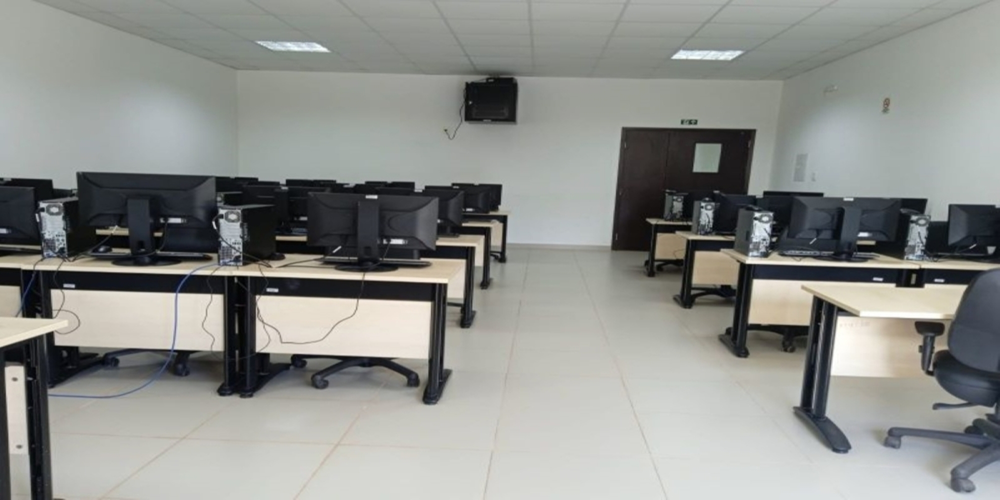
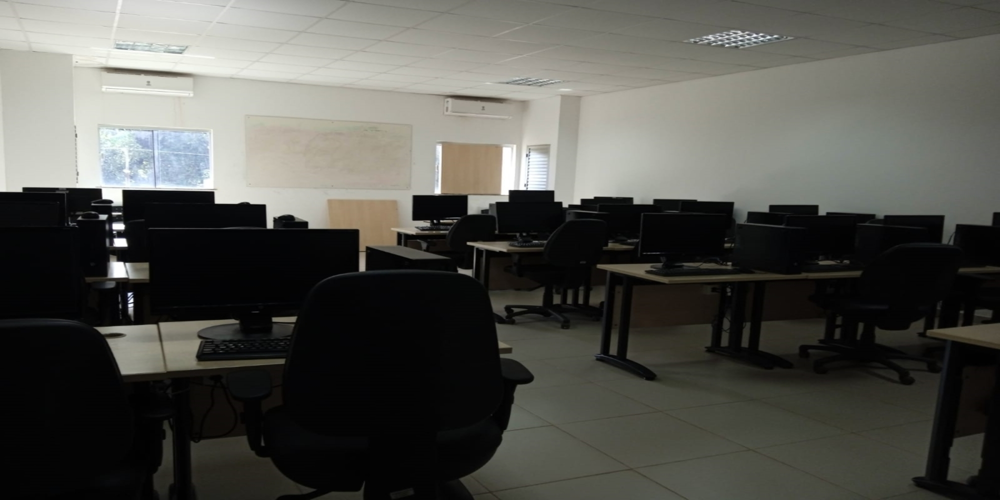
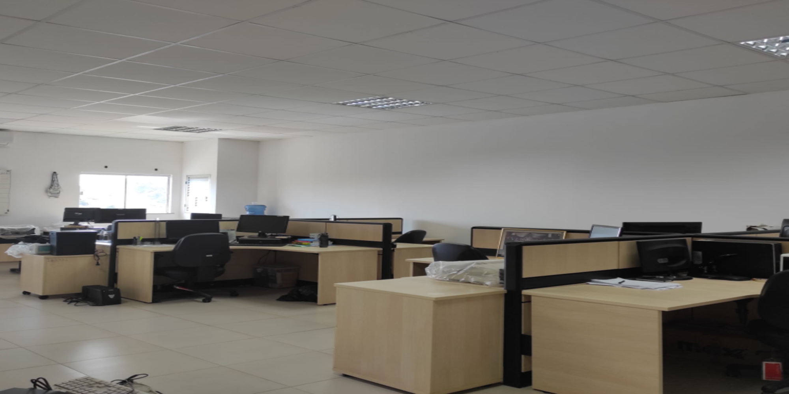
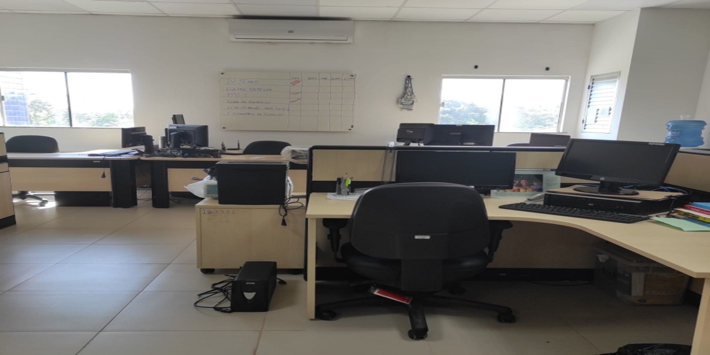
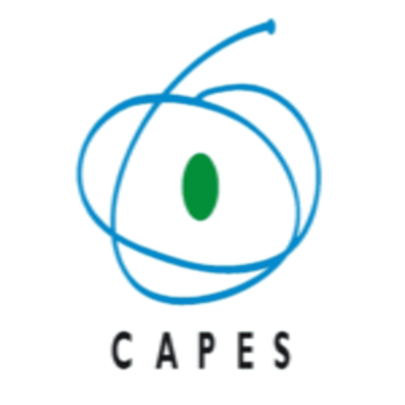
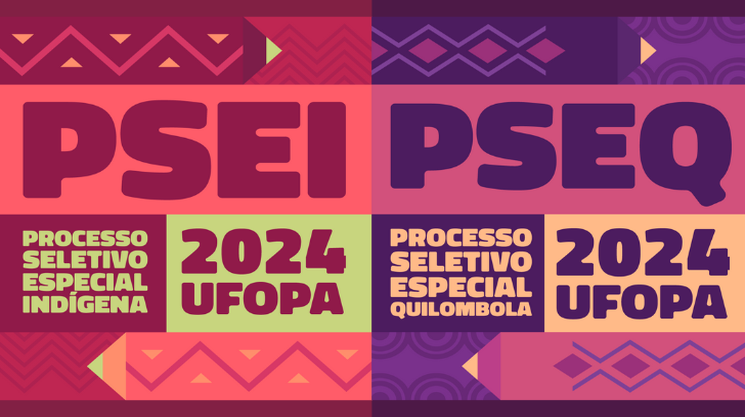
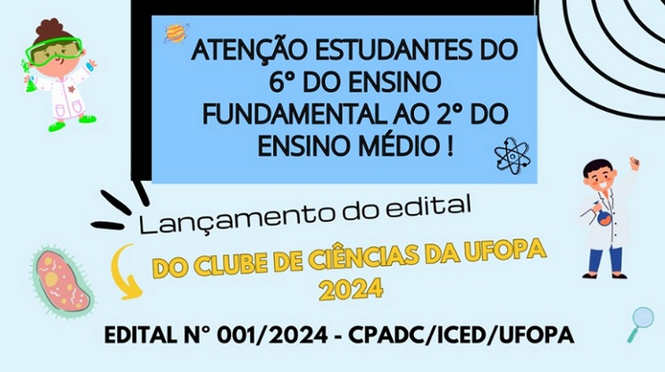
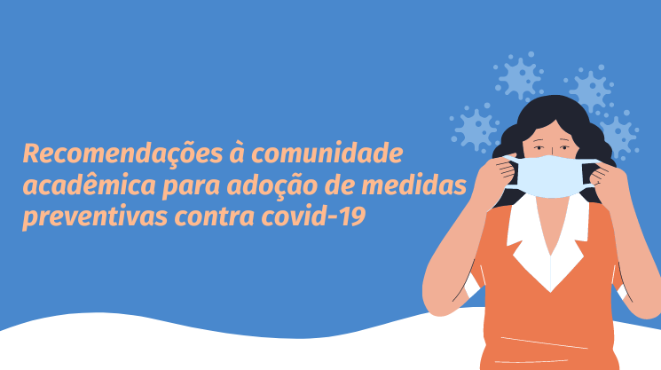

    Anterior Próximo Programa de Computação da Universidade Federal do Oeste do Pará O Programa de Computação (PC) da UFOPA é reconhecido por sua excelência, inovação e compromisso social. O PC possui um papel importante como catalisador do desenvolvimento tecnológico da região Oeste do Pará e Amazônica e como formador de profissionais. Atualmente o programa oferece os cursos de graduação em Ciência da Computação e Sistemas de Informação. Quem Somos? O Programa de Computação (PC) do Instituto de Engenharia e Geociências da UFOPA baseia-se em atividades acadêmicas sólidas. É reconhecido por sua excelência, inovação e compromisso social. O PC possui um papel importante como catalisador do desenvolvimento tecnológico da região Oeste do Pará e da região Amazônica e como formador de profissionais para atuar nas frentes de desenvolvimento que estão se instalando na região. Objetiva preparar um profissional competente, ativo, empreendedor, ético, consciente de seu papel social e de sua contribuição no avanço científico e tecnológico do País. O PC oferece os cursos de graduação em Ciência da Computação e Sistemas de Informação. O corpo docente do PC é formado por 21 professores mestres e doutores, com atuação em diferentes áreas de pesquisa, e uma equipe de servidores técnico-administrativos que dão suporte de forma qualificada às atividades acadêmicas de uma comunidade constituída por mais de 500 alunos de graduação. Situado no Campus Tapajós da UFOPA, o programa de computação dispõe de salas de aula climatizadas, laboratórios de ensino e pesquisa, e um laboratório específico para o desenvolvimento das atividades de extensão – o Laboratório Mídias Eletrônicas. Cursos Ciência da Computação Sistema de Informação Instituições Parceiras Sociedade Brasileira de Computação É uma Sociedade Científica sem fins lucrativos, fundada em 24 de Julho de 1978, que reúne estudantes, professores, profissionais, pesquisadores e entusiastas da área de Computação e Informática de todo o Brasil.  Coordenação de Aperfeiçoamento de Pessoal de Nível Superior É uma fundação vinculada ao Ministério da Educação (MEC) do Brasil que atua na expansão e consolidação da pós-graduação stricto sensu (mestrado e doutorado) em todos os estados brasileiros. Institute of Electrical and Electronics Engineers É uma organização profissional sem fins lucrativos, fundada nos Estados Unidos. É a maior organização profissional do mundo dedicada ao avanço da tecnologia em benefício da humanidade. Notícias Recentes    Anterior Próximo